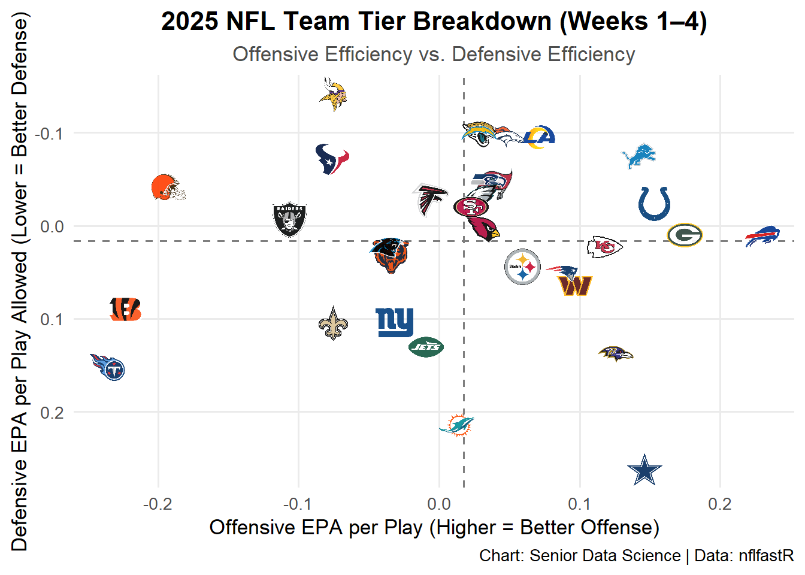

Introduction to NFL Play-by-Play Analysis with nflfastR
SPOA 4001/ItCS 5010: American Football Analytics
Author
Schuckers
Published
August 16, 2026
1 Executive Overview & Learning Objectives
In advanced sports analytics, play-by-play data provides the granular foundation needed to evaluate team efficiency, player performance, and tactical decisions. In this lab, we utilize nflfastR, an R library that provides fast access to cleaned NFL play-by-play data embedded with advanced statistical metrics.
1.1 Key Objectives
By the end of this lab, students will be able to: 1. Acquire and Filter Play-by-Play Data: Download official play-by-play data for specific weeks and season types using nflfastR. 2. Understand Expected Points Added (EPA): Evaluate play-level efficiency using Expected Points Added (\(\text{EPA}\)) and Success Rate. 3. Data Wrangling with dplyr: Aggregate non-trivial play-level metrics to team-level summaries for both offense and defense. 4. Publication-Quality Reporting: Generate dynamic tables with gt and custom visualizations using nflplotR and ggplot2.
2 Environment Setup & Required Libraries
Ensure you have the required packages installed before running this document:
Show R Code
# Uncomment if packages are not yet installed:# install.packages(c("tidyverse", "nflfastR", "nflplotR", "gt", "knitr"))library(tidyverse)library(nflfastR)library(nflplotR)library(gt)library(knitr)# Set global option to avoid scientific notation in printoutsoptions(scipen =999)
Show R Code
# 1. Fetch 2025 play-by-play dataraw_pbp_2025 <- nflfastR::load_pbp(2025)# 2. Filter for Weeks 1-4 regular season scrimmage playspbp_w1_4 <- raw_pbp_2025 |>filter( season_type =="REG", week <=4,!is.na(posteam), # Ensure there is an offensive team play_type %in%c("pass", "run") | pass ==1| rush ==1,!is.na(epa) # Retain valid EPA values )# Inspect dataset dimensionscat("Dataset dimensions (rows x cols):", dim(pbp_w1_4), "\n")
Offensive and Defensive Efficiency Metrics Calculated via nflfastR
Team
Off. Plays
Off EPA/Play
Pass EPA
Rush EPA
Off. Success Rate
Pass Rate
Def EPA/Play
Def. Success Rate
BUF
268
0.230
0.332
0.091
48.9%
57.5%
0.012
42.0%
GB
259
0.175
0.333
−0.031
48.3%
56.4%
0.009
42.2%
IND
258
0.153
0.239
0.045
49.6%
55.4%
−0.024
47.6%
DAL
292
0.146
0.206
0.026
49.7%
66.4%
0.261
50.6%
DET
250
0.141
0.288
−0.028
48.8%
53.6%
−0.075
38.2%
BAL
215
0.125
0.174
0.032
45.6%
65.6%
0.138
46.9%
KC
260
0.118
0.196
−0.051
45.0%
68.5%
0.023
46.2%
WAS
248
0.096
0.101
0.089
46.8%
62.9%
0.064
43.1%
NE
248
0.086
0.301
−0.298
44.8%
64.1%
0.051
47.9%
LA
255
0.070
0.150
−0.049
48.6%
60.0%
−0.096
40.4%
PIT
219
0.059
0.121
−0.031
46.6%
59.4%
0.044
46.0%
DEN
262
0.048
0.106
−0.049
42.0%
62.2%
−0.096
38.7%
TB
279
0.039
0.163
−0.167
41.6%
62.4%
−0.045
43.5%
SEA
238
0.035
0.237
−0.154
45.0%
48.3%
−0.049
42.0%
ARI
253
0.030
0.109
−0.131
40.7%
67.2%
0.001
46.2%
JAX
267
0.029
0.053
−0.007
44.6%
58.8%
−0.099
40.2%
PHI
241
0.028
0.032
0.024
44.4%
53.9%
−0.032
44.0%
LAC
267
0.028
0.096
−0.118
45.7%
68.2%
−0.100
37.7%
SF
270
0.022
0.145
−0.197
48.9%
64.1%
−0.021
44.0%
MIA
223
0.012
0.026
−0.014
42.2%
65.0%
0.214
53.0%
ATL
268
−0.006
0.044
−0.072
44.4%
56.3%
−0.028
44.2%
NYJ
241
−0.010
0.061
−0.121
48.1%
61.0%
0.130
40.4%
NYG
277
−0.032
0.009
−0.102
42.2%
62.5%
0.104
48.3%
CHI
259
−0.035
0.089
−0.252
40.5%
63.7%
0.032
50.0%
CAR
273
−0.038
0.004
−0.118
45.4%
65.2%
0.022
41.5%
NO
284
−0.076
−0.052
−0.116
43.3%
62.7%
0.104
45.7%
MIN
238
−0.076
−0.102
−0.033
44.5%
61.8%
−0.142
43.1%
HOU
243
−0.076
−0.052
−0.116
37.4%
61.7%
−0.072
43.0%
LV
248
−0.107
−0.016
−0.244
39.9%
60.1%
−0.007
43.0%
CLE
280
−0.193
−0.272
−0.026
35.0%
67.9%
−0.042
40.1%
CIN
224
−0.224
−0.289
−0.098
39.3%
65.6%
0.090
47.4%
TEN
242
−0.237
−0.286
−0.137
36.4%
66.9%
0.152
45.7%
Data Source: nflfastR | Scrimmage plays only (Weeks 1–4, 2025)
Show R Code
# Compute tier averages for reference linesavg_off_epa <-mean(team_summary$off_epa_per_play, na.rm =TRUE)avg_def_epa <-mean(team_summary$def_epa_allowed, na.rm =TRUE)ggplot(team_summary, aes(x = off_epa_per_play, y = def_epa_allowed)) +# Quadrant Mean Linesgeom_hline(yintercept = avg_def_epa, linetype ="dashed", color ="gray50", linewidth =0.6) +geom_vline(xintercept = avg_off_epa, linetype ="dashed", color ="gray50", linewidth =0.6) +# Official NFL Team Logosgeom_nfl_logos(aes(team_abbr = team), width =0.055, alpha =0.9) +# Invert Y-axis so lower EPA allowed (better defense) is higher upscale_y_reverse() +labs(title ="2025 NFL Team Tier Breakdown (Weeks 1–4)",subtitle ="Offensive Efficiency vs. Defensive Efficiency",x ="Offensive EPA per Play (Higher = Better Offense)",y ="Defensive EPA per Play Allowed (Lower = Better Defense)",caption ="Chart: Senior Data Science | Data: nflfastR" ) +theme_minimal(base_size =13) +theme(plot.title =element_text(face ="bold", size =16, hjust =0.5),plot.subtitle =element_text(color ="gray30", hjust =0.5),panel.grid.minor =element_blank() )

2.1 Tasks
In sports analytics, plays occurring when the win probability is near 0% or 100% (“garbage time”) can skew team metrics. Modify the filtering logic to exclude plays where win probability (wp) < 0.05 or wp > 0.95. How does removing garbage time affect the top 3 offensive teams?
Show R Code
# Student Workspace: Filter out garbage timepbp_filtered <- pbp_w1_4 |>filter(wp >=0.05& wp <=0.95)# TODO: Compute updated team summaries and compare results
2.2 Instructor Tips for Deployment
Packages: Make sure students install nflreadr and nflplotR prior to running the lab. nflreadr handles the efficient data fetching underlying nflfastR.
Quarto Features: This document utilizes code-folding (code-fold: show), dynamic table styling with gt, and custom ggplot elements provided by nflplotR.
Data Availability:nflfastR::load_pbp(2025) fetches cleaned play-by-play data dynamically from nflverse-data releases via GitHub.